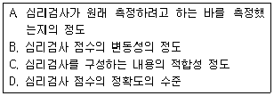
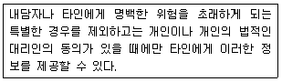
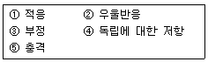

임상심리사-2급 (2005-08-07 기출문제)
1과목: 심리학개론
1. 아들러가 인간의 성격을 설명하면서 강주하지 않은 부분은?
- 열등감의 보상
- 우월성 추구
- 힘에 대한 의지
- 신경증 욕구
(정답률: 85%)

2. 프로이드의 남근기와 관련이 없는 것은?
- 3세에서 6세 사이
- 거세불안
- 동일시를 통한 극복 노력
- 자아성장의 결정적 단계
(정답률: 97%)
3. 주변에 교통사고를 당한 사람들이 많은 사람은 교통사고 발생률을 실제보다 높게 판단하는 것처럼 특정사건을 지지하는 사례들이 기억에 저장되어 있는 정도에 따라 사건의 발생가능성을 판단하는 경향은?
- 초두 효과
- 점화 효과
- 가용성 발견법
- 대표성 발견법
(정답률: 93%)
4. Thorndike가 제시한 효과의 법칙(law of effect)과 관련이 없는 것은?
- 고전적 조건 형성
- 도구적 조건 형성
- 시행착오 학습
- 문제상자(puzzle box)
(정답률: 53%)
5. 조작적 조건화의 강화스케줄 중에서 소거에 대한 저항이 가장 큰 강화스케줄은?
- 고정간격 강화스케줄
- 변화간격 강화스케줄
- 고정비율 강화스케줄
- 변동비율 강화스케줄
(정답률: 95%)
6. 태도의 3요소에 해당하지 않는 것은?
- 인지적 요소
- 평가적 요소
- 귀인적 요소
- 행동적 요소
(정답률: 44%)
7. 다음 중 동조현상이 가장 적게 발생하는 상황은?
- 타인에게 자신이 잘 모르던 정보를 제공받는 경우
- 개인의 주관이나 확신이 강한 경우
- 다수의 인정을 받으려는 동기가 높은 경우
- 이탈에 대한 집단압력이 부담스러운 경우
(정답률: 96%)
8. 피아제(Piaget)의 인지발달단계에서 감각운동기 동안에 발달하는 중요한 능력은?
- 보존개념
- 추상적 사고와 추리
- 형식적 조작
- 대상 영속성
(정답률: 100%)
9. 잘생긴 사람을 보면 그 사람이 성격도 좋고 리더쉽도 있을 것으로 생각하는 경향은?
- 후광효과
- 초두효과
- 평균원리
- 귀인
(정답률: 100%)
10. Erickson의 발달 단계에서 마지막 8단계에 해당되는 노년기를 특징지우는 위기 혹은 해결해야 되는 과제는?
- 친밀감 대 고립감
- 통합감 대 절망감
- 생산감과 자기 몰임
- 근면감 대 열등감
(정답률: 97%)
11. 다음 중 요인분석을 통하여 표면틀질과 원처특질을 밝혀내고 16개의 성격요인을 검사하는 질문지를 개발한 사람은?
- C. Spearman
- G. W. Allport
- R. Cattell
- J. Piaget
(정답률: 84%)
12. 우을증과 어떤 행동사이의 관련성을 살펴보기 위하여 피어슨의 상관계수(r)를 다음과 같이 얻었다고 가정할 때 다음 중 상관의 정도가 가장 큰 것은?
- r = 0.00
- r = 0.50
- r = 1.50
- r = -0.70
(정답률: 59%)
13. 물속에서 기억한 내용을 물속에서 회상시킨 경우가 물 밖에서 회상시킨 경우에 비해서 회상이 잘된다. 이것은 무슨 효과인가?
- 인출단서효과
- 맥락효과
- 기분효과
- 도식효과
(정답률: 69%)
14. 부모나 친구 혹은 영화배우 등의 행동을 본뜸으로써 학습하게 되는 것은?
- 역조건형성
- 고전적 조건형성
- 조작적 조건형성
- 관찰학습
(정답률: 92%)
15. 인간의 발달과 관련된 연구결과를 이해하는데 있어 동시대 집단효과(cohort effect)를 고려해야 하는 연구법은?
- 종단적 연구법
- 횡단적 연구법
- 자연관찰 연구법
- 참여관찰 연구법
(정답률: 65%)
16. 사람들은 대체로 외부귀인보다는 내부귀인하는 경향이 더 강하다고 할때 이것을 무엇이라고 하는가?
- 근본 귀인오류
- 자기고양 편파
- 행위자 귀인편파
- 겸양 편파
(정답률: 77%)
17. 소거(Extinction)가 영구적인 망각이 아니라는 증거가 될 수 있는 것은?
- 자극 일반화(Stimulus generalization)
- 변별(Discrimination)
- 조형(Shaping)
- 자발적 회복(Spontaneous
(정답률: 96%)
18. Watson이 실시한 Albert의 공포 형성 실험이 주는 시사점이 아닌 것은?
- 행동과 성격은 학습의 결과이다.
- 성격은 개인의 잠재적인 기질이다.
- 자극의 일반화 현상이 작용한다.
- 성격의 변화도 역시 학습이다.
(정답률: 74%)
19. “KB-MKB-SMB-C5.1-66.2-9"라는 배열을 외우기는 힘들지만 이것을 IBM-KBS-MBC-5.16-6.29"라는 배열로 재구성하면 외우기가 쉽다. 이와 같이 정보를 재부호화 하여 묶는 것을?
- 암송
- 부호화
- 청킹(Chunking)
- 합리화
(정답률: 90%)
20. 재혼에 방해가 되는 아들을 죽이고 싶은 욕망을 가진 어머니가 아들을 병적으로 끔찍하게 사랑하는 경우를 가장 잘 설명하는 방어기제는?
- 투사
- 반동형성
- 승화
- 합리화
(정답률: 92%)
2과목: 이상심리학
21. 다음 중 DSM-Ⅳ의 유아기, 아동기 및 청소년기에 처음 진단되는 장애에 속하지 않는 것은?
- 운동기술장애
- 강박장애
- 품행장애
- 학습장애
(정답률: 72%)
22. 다음 중 자기애석 성격장애(narcissistic personality Disorder)의 특징을 바르게 설명한 것은?
- 타인회피, 부끄러움, 무관심
- 다양하며 모호한 신체증상 호소
- 자기중심, 성공에 대한 환상
- 자기확신의 결여, 고독에 대한 불안감
(정답률: 96%)
23. 고졸인 30대의 김씨는 사기 협의로 교도소에 여러번 다녀왔으나 부끄러운 줄 모르고 죄책감도 없다. 초등학교때 남의 집에 불을 지르기도 했고 무단 결석을 자주 했었다. 겉으로는 멀쩡하고 정신병적인 행동도 없다. 김씨의 이러한 성격과 관련된 요인으로 확인해야 할 것으로 포함되지 않는 것은?
- 소아기에 신경학적 증후없이 중추신경계에 기능장애만 발생하였는지 여부
- 테스토스테론(testosterone) 호르몬의 수치가 정상수준인지 여부
- 부모의 성격이 파괴적이거나 변덕스럽고 충동적이어서 노골적인 증오심과 거부에 시달려 일관성 있는 초자아발달에 지장이 있었는지 여부
- 부모의 질병, 별거, 이혼 또는 거부감정이 있어서 기본적으로 요구되는 사랑, 안전, 안정 및 존경심에 문제가 있는지 여부
(정답률: 69%)
24. 다음 중 반사회적 성격장애의 증상으로 보기 어려운 것은?
- 법이나 사회적 규범을 준수하지 않는다.
- 개인의 이익이나 쾌락을 위한 거짓말이 반복된다.
- 충동성 혹은 미리 계획을 세우지 못한다.
- 대인관계를 실제보다 더 친밀한 것으로 생각한다.
(정답률: 87%)
25. 다음 중 자폐증의 임상적 특징이 아닌 것은?
- 사회적 및 정서적 교류의 결핍
- 음성언어의 지체나 결여
- 상동적인 신체운동
- 감각입력의 장애
(정답률: 58%)
26. 스트레스 호르몬이라고 불리는 코티솔(cortisol)이 분비되는 곳은?
- 부신
- 대뇌피질
- 변연계
- 해마
(정답률: 83%)
27. 아동 및 청소년기 장애로서, 다른 사람의 기본 권리나 나이에 적합한 사회규준이나 규율을 위반하는 행동양상이 반복적이고 지속적으로 나타나는 것은?
- 품행장애
- 반항성장애
- 반사회성 성격장애
- 주의력결핍 및 과잉행동장애
(정답률: 78%)
28. 강간, 폭행, 교통사고, 자연재해, 가족이나 친구의 죽음 등 충격적 사건에 뒤따른 심리적 장애는?
- 주요 우울증
- 공황장애
- 외상 후 스트레스 장애
- 강박장애
(정답률: 93%)
29. 알콜중독의 취약요인에 대한 정신역동적 입장은?
- 알콜이 스트레스를 해소하는 강화작용을 하는 것이다.
- 구강기에 고착되어 있다.
- 알콜 의존환자의 자녀 가운데 알콜 의존인 경우가 많다.
- 공동체의 가치가 음주를 남성다움의 증거로 여긴다.
(정답률: 74%)
30. 28세의 남자 B씨는 경찰에 의해 검진을 받기 위해 병원 응급실에 실려왔다. 그는 말도 하지 않았고 이상한 자세로 자신의 팔을 등 쪽으로 벌리고 누워 있었다. B씨의 팔을 움직여 놓으면 그 자세로 고정되어 있었다. B씨는 어떤 장애인가?
- 충동조적 장애
- 긴장형 정신분열증
- 이인증 장애
- 감별불능형 정신분열증
(정답률: 64%)
31. 섬망과 치매에 관한 설명으로 올바른 것은?
- 섬망의 필수증상은 이미 존재하거나 현재 진행중인 치매로 잘 설명되는 인지변화가 동반되는 의식장애이다.
- 치매는 단지 노화에 의한 뇌세포의 손상으로 발병한다.
- 섬망은 단기간에 발생하는 의식장애와 인지변화가 특징이다.
- 치매는 심한 기억력장애만 나타날 뿐 복합적인 인지결손은 나타나지 않는다.
(정답률: 75%)
32. 다음 중 조증삽화의 진단기준을 만족시키기 위해 필요한 기분 문제가 아닌 것은?
- 고양감
- 우울감
- 확장감
- 자극과민성
(정답률: 62%)
33. 55세의 A씨는 알콜 중독으로 입원 이틀째에 혼돈, 망상, 환각, 진전, 초조, 불면, 발한 등의 증상을 보였다. A씨의 현 증상은?
- 알콜로 인한 금단 증상이다.
- 알콜로 인한 중독 증상이다.
- 알콜을 까맣게 잊어버리는(black out) 증상이다.
- 알콜로 인한 치매 증상이다.
(정답률: 91%)
34. 단극성 우울증과 양극성 장애에 관한 설명으로 틀린 것은?
- 단극성 우울증은 양극성 장애에 비해 발병 나이가 빠른 경향이 있다.
- 양극성 장애는 리튬이라는 약물에 더 잘 반응한다.
- 단극성 우울증은 양극성 장애에 비해 여성에게 더 많이 발생한다.
- 단극성 우울증은 불면증이 많은 반면 양극성 장애에서는 과다수면증(더 많은 잠을 잠)이 많다.
(정답률: 31%)
35. 다음 중 알코올 남용의 진단 기준이 아닌 것은?
- 음주로 인해 학업과 직무수행에 장애를 겪는다.
- 신체적으로 유해한 환경에서 알코올을 사용한다.
- 알코올 사용과 관련하여 내성과 금단 증후군이 나타난다.
- 지속적인 알코올 섭취로 인해 심각한 사회적 문제가 발생하고 있음에도 불구하고 지속적으로 알코올을 섭취한다.
(정답률: 56%)
36. 정신지체에 대한 설명으로 맞는 것은?
- 읽기, 쓰기, 셈하기 장애를 보이는 학습장애의 다른 용어이다.
- 경도(mild) 정신지체는 대략 IQ 25이하를 의미하며 전반적인 지원을 필요로 하는 정신지체를 말한다.
- 정신지체는 일생에 걸쳐 언제든지 나타날 수 있다.
- 일부 정신지체는 의학적 발견으로 예방이 가능하다.
(정답률: 57%)
37. 영숙은 자주 불안하다는 생각을 하곤 했으며 가족들과 다투고 나면 온 몸이 쑤시곤 했다. 어느 날 방안에 누워있는데 천장에 걸려있는 전등이 자신에게 떨어지면 큰일이라는 생각이 들었고 실제로 전등이 자신의 배 위로 떨어진다는 상상을 했다. 그런데 웬일인지 배 밑의 신체부분에 감각을 잃게 되었고 움직일 수 없었다. 병원을 찾았으나 신체적 원인을 발견하지 못했다. 가장 가능성이 높은 진단은?
- 건강염려증
- 전환장애
- 신체화장애
- 신체변형장애
(정답률: 81%)
38. 사람이 스트레스 장면에 처하게 되면 일차적으로 불안해지고 그 장면을 통제할 수 없게 되면 우울해진다고 할 때 이를 설명하는 모델은?
- 학습된 무기력감 모델
- 강화감소 모델
- 인지 모델
- 정신분석 모델
(정답률: 65%)
39. 알츠하이머 질환에 대한 설명으로 옳지 않은 것은?
- 알츠하이머 환자는 호전적이거나 공격적 행동은 하지 않는다.
- 정상인의 뇌보다 알츠하이머 환자의 뇌에서는 아세틸콜린 세포의 상실이 발견된다.
- 알츠하이머 질환은 가족력이 있고 남성보다 여성에게 빈번하게 나타난다.
- 알츠하이머 질환은 완치될 수 있는 질환이 아니다.
(정답률: 71%)
40. 행동이 퇴행적이고 망상의 내용은 기이하며 인격의 황폐화가 가장 심한 정신분열병의 유형은?
- 와해형(Disorganized type)
- 긴장형(Catatonic type)
- 망상형(Paranoid type)
- 잔류형(Residual type)
(정답률: 58%)
3과목: 심리검사
41. 정신과에 입원한 환자에게 MMPI를 실시하려고 한다. MMPI를 제대로 실시할 수 있는지 여부를 확인하기 위하여 알아보아야 할 사항으로 맞지 않는 것은?
- 지능수준
- 신체장애
- 연령
- 독해력
(정답률: 90%)
42. 다음 중 베일리 검사(Bayley Scales of Infant Development-Ⅱ Assessment)에 대한 설명으로 틀린 것은?
- Mental Scale, Motor Scale, behavior Rating Scale로 구성되어 있다.
- BSID-Ⅱ에서는 대상 연령이 1개월에서 42개월 까지 확대되었다.
- 규준자료를 제시하고 있다.
- 전 생애에 걸친 발달 과정을 평가할 수 있다.
(정답률: 77%)
43. 웩슬러 지능검사는 언어성 6개, 동작성 5개 소검사로 구성되어 있다. 다음 중 언어성 검사에 해당하는 소검사는?
- 차례맞추기
- 숫자외우기
- 바꿔쓰기
- 모양맞추기
(정답률: 76%)
44. MMPI검사의 임상척도의 하나인 심기증척도(Hs)의 설명으로 맞는 것은?
- 사소한 신체적, 심적 증상을 의식하고는 이에 과도하게 집착하고 불안해 하는 지표이다.
- 검사항목은 60개이다.
- 현실적 어려움이나 갈등을 회피하는 방법으로 부인기제를 사용하는 경향 및 정도를 측정한다.
- H척도가 높은 사람은 심한 정신적 압박을 받으면 자신의 욕구를 무의식적으로 신체적 증상으로 전환시키는 경향이 강하다.
(정답률: 70%)
45. 30세된 남자가 운전을 하다가 중앙선을 침범한 차량과 충동하여 두뇌손상을 입었다. 이후 환자는 매사 의욕이 없고 할 수 있는데도 불구하고 어떤 행동을 시작하려고 하지 않으며, 계획을 세우거나 실천하는 것이 거의 안된다고 한다. 이 환자는 뇌의 어떤 부위가 손상되었을 가능성이 큰가?
- 측두엽
- 후두엽
- 전두엽
- 소뇌
(정답률: 87%)
46. 성격유형검사(MBTI)의 실시와 해석에 대한 설명으로 맞는것은?
- 피검자가 이해하지 못하는 문항이 있으면 그 문항의 해석, 설명을 꼭 해주어야 한다.
- 내적인 혼란상태에 있는 정신장애인들에게는 부적합하다.
- 이 검사는 후천적 선호성을 알려주는 척도이기 때문에 정상적인 성격유형을 밝히는데는 부적절하다.
- 특정한 조건(예, 입사시험)에서 검사를 받는 경우에는 안정적인 결과가 나올 수 있다.
(정답률: 64%)
47. 다음 중 동일한 검사를 동일한 피검자 집단에 일정 시간 간격을 두고 두 번 실시하여 얻은 두 검사 점수의 상관계수에 의하여 신뢰도를 측정하는 방법은?
- 동형검사 신뢰도
- 재검사 신뢰도
- 반분검사 신뢰도
- 문항 내적 일관성 신뢰도
(정답률: 69%)
48. 지능에 관한 일반적인 정의로 적합하지 않은 것은?
- 지능이란 학습능력이다.
- 지능이란 적응력이다.
- 지능은 총합적ㆍ전체적이다.
- 지능이란 단순한 사고능력이다.
(정답률: 79%)
49. 다음 중 객관적 성격 검사의 단점이 아닌 것은?
- 신뢰도, 타당도를 검증하기가 어렵다
- 피검자가 자신의 의견을 자유롭게 표현할 수 없다.
- 사회적 바람직성 요인에 의해 영향을 많이 받는다.
- 무의식적 요인을 평가하기 어렵다.
(정답률: 78%)
50. 여러 지역의 아동을 대상으로 학업성취도 검사를 하였다. 그 유용성에 대한 설명으로 맞지 않는 것은?
- 특정 교육목표가 목표한 기능을 향상시켰는가를 확인한다.
- 한 아동이 영역별로 학업성취도의 편차를 보이는지 알아본다.
- 초등학교 입학전이나 유치원 기간동안 실시하여 선별검사로 사용한다.
- 지역별로 학업성취정도가 차이가 있는지 비교한다.
(정답률: 38%)
51. 집단용 지능검사의 특징으로 옳은 것은?
- 개인용 검사에 비해 지적 기능을 보다 신뢰성 있게 파악할 수 있다.
- 실시와 채점, 해석이 간편하다.
- 개인용 검사에 비해 임상적인 유용성이 높다.
- 선별검사(screening test)로 사용하기에는 적합하지 않다.
(정답률: 54%)
52. 심리검사에서 원점수란 실시한 심리검사를 채점해서 얻는 최초의 점수를 말한다. 이 원점수에 대한 설명으로 틀린 것은?
- 원점수는 그 자체로는 거의 아무런 정보를 주지 못한다.
- 원점수는 기준점이 없기 때문에 특정 점수의 크기를 표현하기 어렵다.
- 원점수는 척도의 종류로 볼 때 등간척도에 불과할 뿐 사실상 서열척도가 아니다.
- 원점수는 서로 다른 검사의 결과를 동등하게 비교할 수 없다.
(정답률: 60%)
53. Bannatyne 의 분류에 따르면 웩슬러 지능검사는 4가지 범주(언어적 개념화, 공간적 능력, 연속적 능력, 획득된 지식)으로 분류될 수 있다. 지능은 우수하지만 근본적으로 주의력결핍장애가 있어 학업부진을 보이는 아동이나 청소년들이 가장 낮은 점수를 보이는 범주와 그 범주에 속하는 소검사들이 바르게 짝지어진 것은?
- 획득된 지식 - 기본지식, 산수문제, 어휘문제
- 연속적 능력 - 산수문제, 숫자문제, 차례맞추기
- 연속적 능력 - 산수문제, 숫자문제, 바꿔쓰기
- 획득된 지식 - 기본지식, 산수문제, 이해문제
(정답률: 32%)
54. 23개월 유아가 월령에 비해 체격이 작고 아직도 걷는 것인 안정적이지 않으며, 말할 수 있는 단어가 “엄마, 아빠”로 제한되었다는 내용을 주 증상으로 내원하였다. 이 유아에게 실시할 수 있는 검사로 적합한 것은?
- 그림지능검사
- 유아용 지능검사
- 덴버 발달검사
- 삐아제식 지능검사
(정답률: 90%)
55. 다음 중 검사가 측정하고자 하는 속성을 제대로 측정하였는지를 논리적 사고에 입각한 논리적 분석과정을 통해 주관적으로 판단하는 타당도는?
- 공인 타당도
- 구인 타당도
- 내용 타당도
- 예측 타당도
(정답률: 72%)
56. 신경심리검사는 고정식(fixed). 융통식(flexible) 바테리 접근이 있는데, 두 접근의 장단점에 대한 설명으로 틀린 것은?
- 고정식 바테리 접근은 임상장면에서 동일한 검사의 많은 자료가 자동적으로 축적됨에 따라 임상과 연구의 목적이 함께 충족될 수 있다.
- 고정식 바테리 접근은 급속히 발전하는 신경심리학의 연구결과에 맞추어 검사방법을 변경시킬 수 없다는 것이 단점이다.
- 융통식 바테리 접근은 기본검사에서 전반적인 기능이 정상으로 나오면 필요한 검사만을 선택적으로 실시할 수 있다.
- 융통식 바테리 접근은 고정식 바테리 접근과는 달리 해석상의 규준이나 지침이 제시되기 때문에 검사자의 전문성이 덜 요구된다.
(정답률: 73%)
57. 구성능력을 평가하는데 적절한 신경검사는?
- 추적검사(Trial Making Test)
- Boston 실어증검사
- Rey 복잡도형검사(Complex Figure Test)
- 위스콘신 카드검사
(정답률: 69%)
58. 다음 중 Wechsler 계열의 지능 검사를 나이가 어린 대상에게 실시하는 것부터 차례로 배열한 것은?
- WAIS-R → WPPSI-R → WISC-III
- WPPSI-R → WISC-III → WAIS-R
- WISC-III → WAIS-R → WPPSI-R
- WPPSI-R → WAIS-R → WISC-III
(정답률: 74%)
59. 검사해석 시 자주 사용하는 T점수는 z 점수와 밀접한 관련이 있다. T점수가 60이라면 이에 해당하는 z 점수는?
- 0
- 1
- 2
- -1
(정답률: 91%)
60. 바쁜 부모를 대신하여 방과 후 중풍에 걸린 할머니를 돌보던 여학생이 갑자기 오른손 마비 증상을 보여서 신경과를 방문하여 진찰을 받았으나, 신경학적 검사에서는 모두 정상 소견을 보였다. 정신과로 자문이 의뢰되어 MMPI를 실시한 결과 1-3번 척도가 가장 높게 상승하였고, 2번 척도는 3번 척도보다 매우 낮았다. 가능한 진단명은?
- 신체화 장애
- 전환 장애
- 경련성 장애
- 외상 후 스트레스 장애
(정답률: 59%)
4과목: 임상심리학
61. 다음 중 Boulder 모델에서 제시한 임상심리학자의 주요 역할을 가장 잘 열거한 것은?
- 치료, 평가, 자문
- 치료, 평가, 연구
- 치료, 평가, 행정
- 평가, 교육, 행정
(정답률: 70%)
62. ABAB 설계에 대한 설명으로 틀린 것은?
- AB 또는 ABA 로 변형이 가능하다.
- 한번에 두개 이상의 처치효과를 비교한다.
- 통제집단에 대한 처치가 보류되는 문제가 있다.
- 철회되지 않는 학습과제의 경우 적용이 어렵다.
(정답률: 25%)
63. 최초로 임상심리학이라는 용어를 사용하였고, 또 최초로 심리진료소를 개설한 임상심리학의 원조는?
- 분트(W. Wundt)
- 위트머(L. Witmer)
- 프로이트(S. Freud)
- 로저스(C. Rogers)
(정답률: 79%)
64. 운동기능이나 감각식별 과제로 구성된 심리검사의 신뢰도는 적합하나, 추리력 및 독창성을 측정하는 심리검사의 신뢰도로 적합하지 못한 것은?
- 재검사 신뢰도
- 동형검사 신뢰도
- 반분신뢰도
- 내적일치도
(정답률: 53%)
65. 임상심리학자의 고유한 역할에 해당되지 않는 것은?
- 사례관리
- 심리평가
- 심리치료
- 심리학적 자문
(정답률: 78%)
66. 수련을 끝낸 임상심리 전문가들이 집단개업활동을 할 때 주의해야 할 사항은?
- 자기의 결정, 직업윤리, 활동에 대한 개인적인 책임
- 직업적인 경쟁과 성격적인 충돌 가능성
- 독립적인 사무실의 확보 비용
- 개인적이고 직업적인 고립감
(정답률: 78%)
67. 심리검사의 타당도(validity)의 의미로 알맞은 것은?

- A. B
- A. C
- B. D
- B. C
(정답률: 88%)
68. 상담에서 해석의 제시형태로 적절하지 않는 것은?
- 확정적 표현
- 점진적 전형
- 반복적 전형
- 질문형태의 제시
(정답률: 54%)
69. 다음은 임상심리학자의 윤리기준 중 무엇을 의미하는가?

- 비밀보장의 원칙
- 소비자 복지의 원칙
- 공적인 진술의 원칙
- 인간피험자를 대상으로 하는 연구에서의 원칙
(정답률: 79%)
70. 행동관찰의 잠재적인 문제에 해당되지 않는 것은?
- 관찰자의 신뢰도
- 관찰자의 개입 가능성
- 치료와의 직접적인 연관성
- 상황적 요소
(정답률: 59%)
71. 다음 중 심리치료에서 좋은 결과를 이끌어 내는 요인으로 볼 수 없는 것은?
- 치료자의 온정과 공감
- 치료자와 내담자간의 치료적 동맹 관계
- 문제에 대한 방어적 회피
- 치료에 대한 내담자의 적절한 기대
(정답률: 89%)
72. 뇌의 편측성 효과를 탐색하는 방법은?
- 뇌파검사
- 동물외과술
- 신경심리검사
- 이원청취기법
(정답률: 74%)
73. 스트레스는 정신장애 뿐 만 아니라 신체적 질병의 발병, 진행과정, 그 예후에 영향을 준다. A형 성격의 사람은 일상생활에서 특히 스트레스를 많이 받는다고 알려져 있다. 이 A형 성격과 관련이 깊은 신체적 질병은?
- 관상동맥성 심장질환
- 암
- 위궤양
- 본태성 고혈압
(정답률: 78%)
74. 다음 중 고전적 조건형서의 원리를 응용한 치료 기법은?
- 혐오치료
- 토큰경제
- 타임 아웃(TIME OUT)기법
- 부적 강화
(정답률: 86%)
75. 임상적 면접에서 사용되는 바람직한 의사소통 기술에 해당되는 것은?
- 면접자 자신의 사적인 이야기를 꺼내는데 주저하지 않는다.
- 침묵이 길어지지 않게 하기 위해, 면접자는 즉각 개입할 준비를 한다.
- 폐쇄형보다는 개방형 질문을 주로 사용한다.
- 내담자의 감정보다는 얻고자 하는 정보에 주목한다.
(정답률: 87%)
76. 다음 중 접수면접의 주요목적이 아닌 것은?
- 환자를 병원이나 진료소에 의뢰할지 고려한다.
- 제공되는 서비스에 대한 환자의 질문에 대답 한다.
- 치료자에게 신뢰, 래포 및 희망을 심어주려고 시도한다.
- 환자가 자신이나 다른 사람을 해칠 중대한 위험상태에 있는지 결정한다.
(정답률: 58%)
77. 대표적인 지능검사인 Wechsler 성인 및 아동 지능검사를 대표하는 하위검사들에서 환산점수의 평균과 표준편차가 올바른 것은?
- 평균 100, 표준편차 15
- 평균 10, 표준편차 5
- 평균 50, 표준편차 10
- 평균 10, 표준편차 3
(정답률: 20%)
78. 심리치료 과정에서 저항이 일어나는 일반적 이유가 아닌 것은?
- 환자가 변화를 원할지라도 환자의 삶에 중요한 영향을 미치는 타인들이 현 상태를 유지하도록 방해할 수 있기 때문이다.
- 부적응적 행동을 유지함으로써 얻는 이차적 이득을 환자가 포기하기 어렵기 때문이다.
- 익숙한 행동을 변화시키려는 시도가 환자에게 위협을 주기 때문이다.
- 치료자가 가진 가치나 태도가 환자에게 위협적이기 때문이다.
(정답률: 67%)
79. 만성적인 인지적 손상, 최근 사건에 대한 심각한 기억력 저하, 지남력 사실 등이 주된 특징이고, 오랫동안 심각한 수준의 음주를 한 사람이 나타내는 증후군은?
- Raynaud씨병
- Korsakoff 증후군
- 알코올의존 증후군
- 태아 알코올 증후군
(정답률: 96%)
80. 정신분열증으로 휴직을 하고 2년간 입원치료를 받아 증상이 완화된 교사가 복직을 하기 위해 정신과 외래를 방문하여 심리평가를 받았다. 이 교사가 자신에게 증상이 없음을 인정받기 위한 시도가 과도한 경우 MMPI에서 예상되는 타당도 척도들의 양상은?
- 정상범위에 있을 것이다.
- L, F, K 척도 모두 상승할 것이다.
- L과 K척도가 높게 상승할 것이다.
- F척도가 높게 상승할 것이다.
(정답률: 31%)
5과목: 심리상담
81. 내담자가 심리상담실에 찾아와서 자신이 어떻게 행동해야 할지(예를 들면, 무슨 말을 해야하는지, 휴대폰을 어떻게 해야하는지, 오늘은 언제까지 심리상담이 진행되는 건지 등)를 모르고 불안해한다. 심리상담자가 무엇을 소홀히 하고 있기 때문인가?
- 수용
- 해석
- 구조화
- 경청
(정답률: 82%)
82. 집단상담의 초기단계에서 다루어져야 할 주요 과제에 해당하지 않는 것은?
- 신뢰할 수 있는 분위기 조성
- 집단원의 저항 다루기
- 집단에 대한 두려움, 희망, 조건, 기대를 기꺼이 표현하기
- 집단규준을 마련하기
(정답률: 81%)
83. 체계적 둔감법(systematic desensitization)의 기초가 되는 학습원리는?
- 혐오 조건형성
- 고전적 조건형성
- 조작적 조건형성
- 고차적 조건형성
(정답률: 74%)
84. 다음 중 정신역동적 상담기법의 핵심특징과 가장 거리가 먼 기법은?
- 공감적 경청
- 자유연상
- 꿈의 해석
- 전이의 해석
(정답률: 83%)
85. 성폭력, 아동학대 피해자에게 그가 겪은 사건의 전말을 자세하게 녹음해서 지겹도록 두고두고 그 테이프를 듣게 한다면, 이는 어떤 상담기법인가?
- 노출
- 정보제공
- 직면
- 반영
(정답률: 76%)
86. 전화상담에 대한 설명으로 틀린것은?
- 내담자의 말을 가로막지 않고 경청한다.
- 내담자가 상담자를 신뢰할 수 있도록 상담자의 이름 등 개인신상을 자세히 공개한다.
- 상담자는 내담자가 감정을 발산할 수 있도록 허용해 준다.
- 내담자가 고맙다는 말을 할 때 “고맙다고 말씀하시니 저도 기쁩니다.”라고 반응한다.
(정답률: 79%)
87. 성폭력 피해자의 상담원리로서 부적절한 것은?
- 상담자 자신이 갖는 성폭력에 대한 편견을 자각하고 올바른 태도로 수정한다.
- 위기상황에 있는 피해자의 상태를 수용하고 반영해주며 진지한 관심을 전달한다.
- 성폭력 피해가 내담자의 책임이 아니며, 가치가 손상된 것이 아님을 확신하도록 한다.
- 성폭력 피해자의 고통과 공포, 분노감을 되도록 단기에 치유하려고 시도한다.
(정답률: 95%)
88. 약물남용 청소년의 진단 및 평가에 있어서 상담자가 유의해야 할 사항으로 틀린 것은?
- 청소년이 약물을 사용한 경험이 있다는 것만으로 약물 남용자로 낙인찍지 않도록 한다.
- 청소년 약물 남용과 관련해서 임상적으로 이중진단의 가능성이 높은 심리적 장애는 우울증, 품행장애, 주의결핍-과잉행동 장애, 자살 등이 있다.
- 청소년 약물남용자들은 약물사용 동기나 형태, 신체적 결과 등에서 성인과 다른 양상을 보이므로 DSM-IV 와 같은 성인 위주 진단체계의 적용에 한계가 있다.
- 약물남용이 일차적인가 이차적인가에 따라 우선적으로 개입해야 하는 상담목표가 달라지는데, 일차적 약물남용이란 가족문제나 학교 부적응 등의 관련요인들의 영향으로 인한 약물사영을 말한다.
(정답률: 80%)
89. 신체적 장애가 발생하는 경우 적응과정을 거치게 된다. 그 과정을 바르게 나열한 것은?

- ③→②→⑤→④→①
- ⑤→③→②→④→①
- ②→⑤→③→①→④
- ⑤→②→③→①→④
(정답률: 77%)
90. 인터넷 중독의 상담전략 중 게임관련 책자, 쇼핑 책자, 포르노 사진 등 인터넷 사용을 생각하게 되는 단서를 가능한한 없애는 기법은?
- 자극 통제법
- 정서 조절법
- 공간재활용법
- 인지재구조화법
(정답률: 97%)
91. 정신분석적 심리치료에서 치료목표를 달성하기 위한 가장 강력한 수단은?
- 전이
- 역전이
- 꿈 분석
- 자유연상
(정답률: 69%)
92. 다음 중 행동치료 기법으로 분류되지 않은 것은?
- 강화
- 모델링(modeling)
- 홍수요법
- 반영
(정답률: 46%)
93. 효과적인 전화상담을 위해 상담자가 활용할 수 있는 기본적인 방법들에 속하지 않는 것은?
- 성실한 경청
- 공감적 이해의 전달
- 즉각적 개입 및 문제해결
- 전이 반응을 좌절시킴
(정답률: 79%)
94. 자살방지센터(suicide prevent centers)에서 긴급한 자살 상황에 처한 사람으로부터 걸려온 전화를 받는 자원봉사자의 행동요령은?
- 점검표(check list)를 앞에 놓고, 전화를 건 사람에게 자세한 질문을 던진다.
- 자살동기를 물어서는 안된다.
- 자살계획을 털어놓을 때까지 기다려야 한다.
- 자살하지 말라고 지시한다.
(정답률: 94%)
95. AA(Alcoholic Anonymous)에서 이루어지는 활동의 대표적인 특징은?
- 알코올 중독 치료 후에 사교적인 음주를 허용함
- 술이나 중독물의 부작용을 생생하게 상상하고 논의함
- 술 중독을 병으로 인정하고 단주를 목표로 함
- 술과 함께 심한 부작용을 일으키는 혐오적 약물을 치료함
(정답률: 66%)
96. 우울한 사람들이 보이는 체계적인 사고의 오류 중 결론을 지지하는 증거가 없거나 결론과 배치되는데도 불구하고 어떤 결론을 이끌어 내는 과정을 의미하는 인지적 오류는?
- 선택적 추상화(selective abstraction)
- 과일반화(overgeneralization)
- 개인화(personalization)
- 임의적 추론(arbitrary inference)
(정답률: 91%)
97. 청소년의 자아개념 향상을 위한 상담전략이 아닌 것은?
- 청소년 자신의 능력과 중요성에 대한 자각
- 자기국가주의와 문화적 우월주의
- 대인관계 기술
- 자기이해 및 표현능력
(정답률: 90%)
98. 인지적 결정론에 따른 치료적 접근과 입장이 다른 것은?
- 합리적 정서치료
- 점진적 이완훈련
- 인지치료
- 자기교습 훈련
(정답률: 75%)
99. 가족상담에 대한 맥매스터 모델에 대한 설명으로 적절하지 못한 것은?
- 가족기능을 8가지 측면에서 고려한다.
- 정서적 관여는 다섯 가지로 분류한다.
- 정서적 반응 내용에 대해 두 가지 질문을 한다.
- 행동통제 기능은 네 가지 유형으로 분류한다.
(정답률: 27%)
100. 인터넷 상담의 장점으로 가장 적합한 것은?
- 래포(rapport) 형성이 쉽다.
- 내담자의 정보를 얻기 쉽다.
- 상담 공간과 시간이 용이하다.
- 상담과정이 원활하다.
(정답률: 80%)